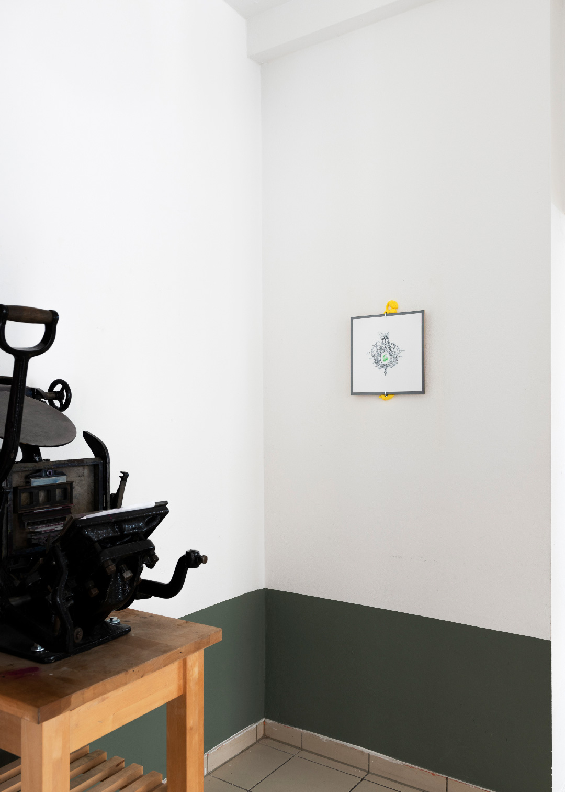
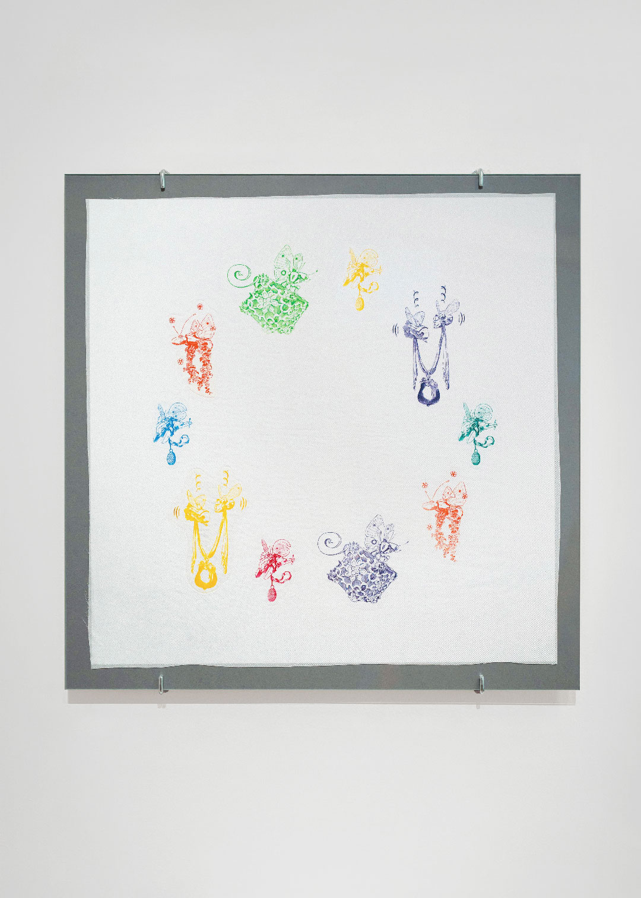
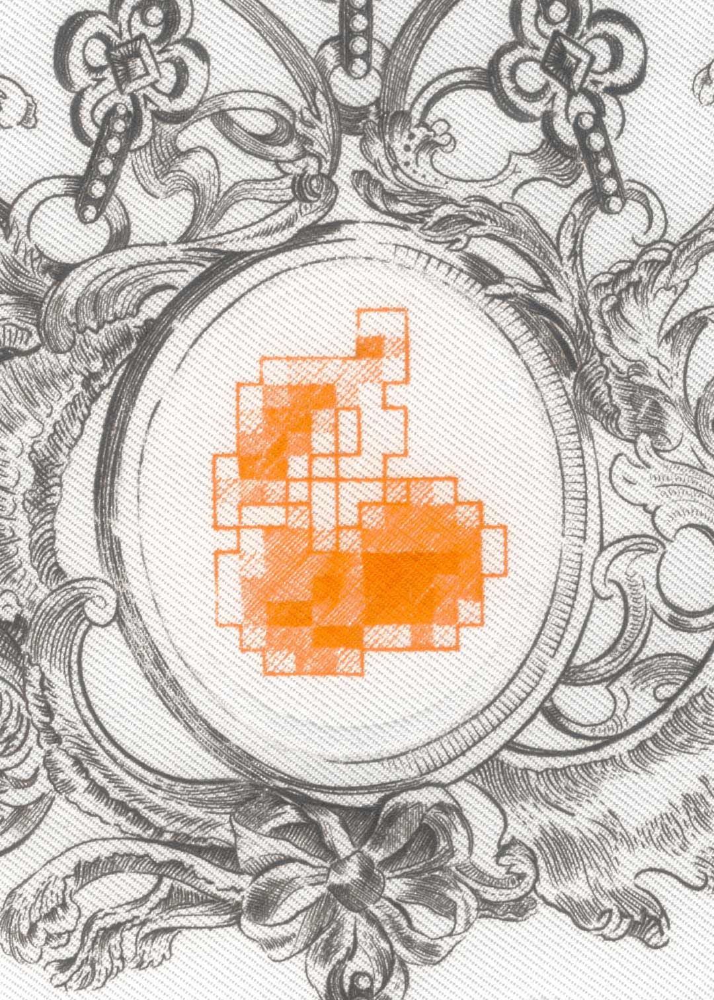
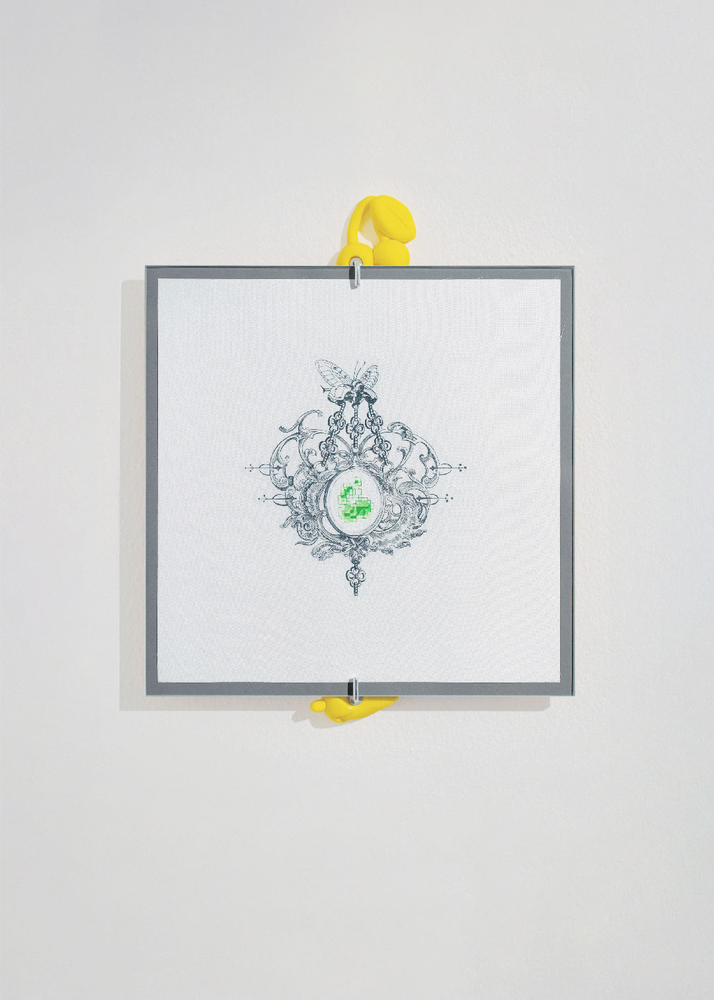
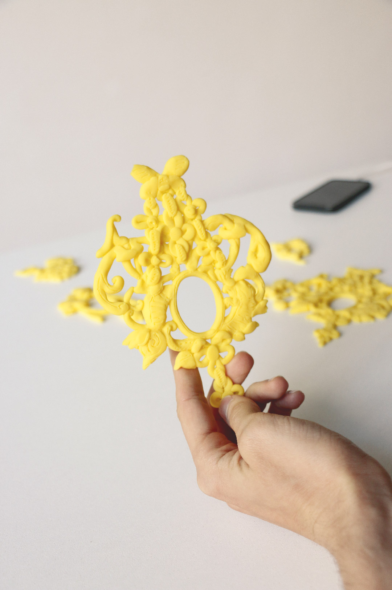
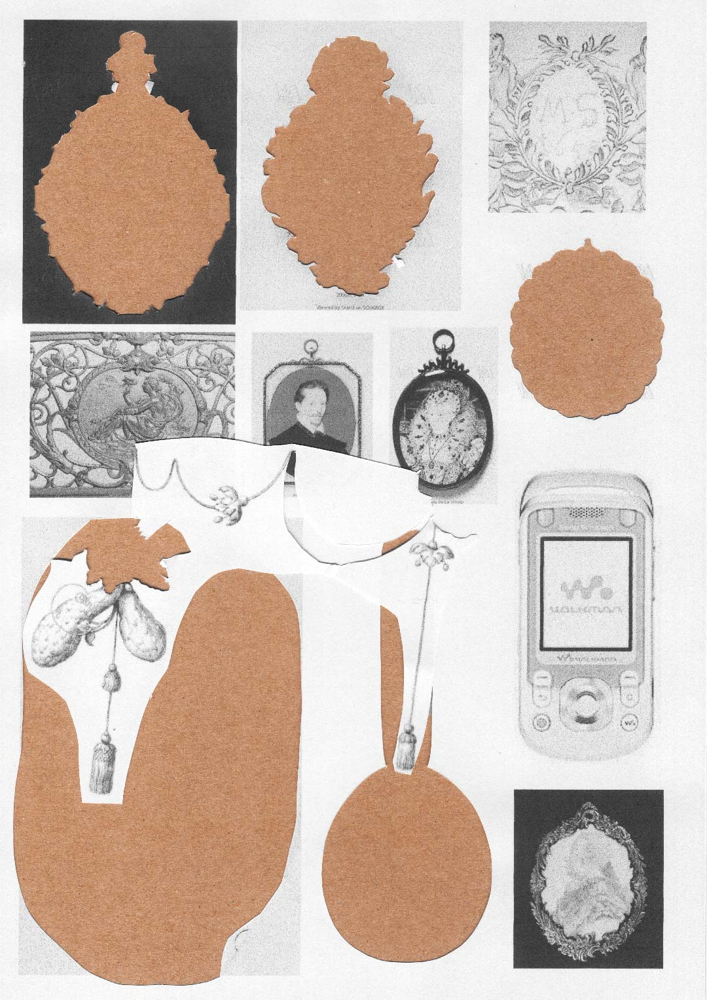

index | shop | info | contact | chaos
A Buzzing Procession is a visual research project commissioned by Vienna Design Week↗, developed in collaboration with Viennese engraver Kirsten Lubach↗. The project was presented as a series of nine copper prints on silk and paper, displayed alongside Lubach’s tools in her workshop in Vienna.
A Buzzing Procession (Vienna, 2024) | Copper prints on silk and paper | img01 and img03 by Lea Sonderegger↗ (available via shop)


The copper engraving archives of the MAK Museum↗ served as a key reference for the development of a series of hybrid floral patterns. The project focuses on reintroducing the long-abandoned technique of copper printing on silk, historically considered challenging due to the fragility of the material. By revisiting this process, the series proposes an alternate present in which copper engraving evolves alongside shifting representations of nature in the 21st century. It distorts traditional copperplate vocabulary, combining rocaille ornament, typographic elements, mecha-manga insects, and supermarket advertising imagery.
A Buzzing Procession (Vienna, 2024) | Copper prints on silk and paper | img05 and img07 by Vienna Design Week↗ (available via shop)




Research, A Buzzing Procession (Vienna, 2024) | Polyuretane, paper, craft, laser print


*This website was last updated on July 1, 2026.